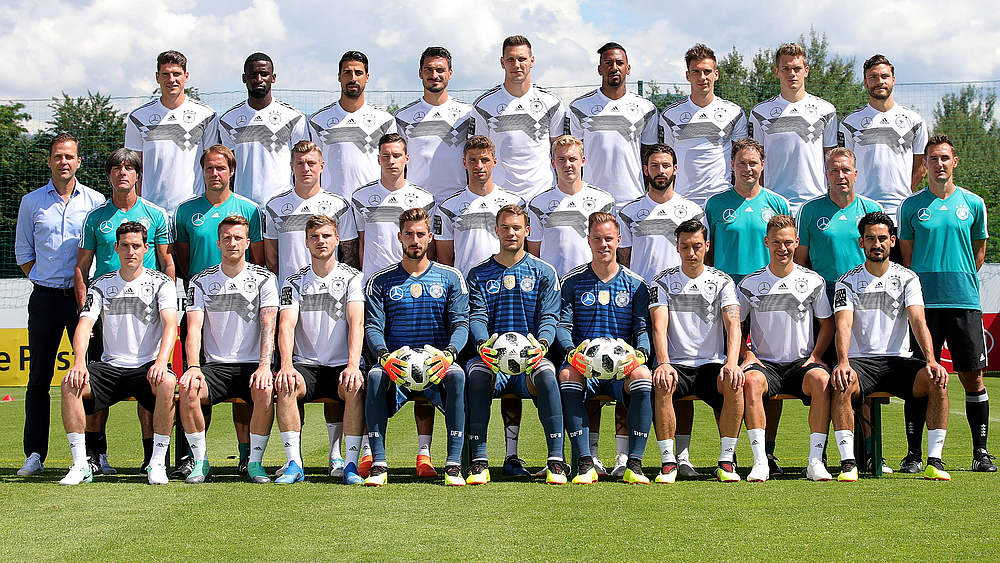

The poor performance made this year nothing but a dissapointment for their supporters at home and overseas.

It was the first time after 1990 Germany did not even make through the qualification stage. With three points and two goals short, they stayed the last place among four teams. They lost 0-1 to Mexico, but then won the game against Sweden 2-1. In the third game which determines who can move to the next stage, this team showed no desire of winning and eventually lost to South Korea 0-2 in the last seven minutes and ended their 2018 World Cup journey.
The journey in Russia itself was already a huge dissapointment. Shortly after they returned back to Germany, Mesut Özil openly expressed his desire of quitting the national team forever through his social media. In his statment, he explicitly mentioned that "my job is a football player and not a politician... The treatment I have received from the DFB and many others makes me no longer want to wear the German national team shirt... People with racially discriminative backgrounds should not be allowed to work in the largest football federation in the world that has players from dual-heritage families... In the eyes of Grindel and his supporters, I am German when we win but I am an immigrant when we lose." You could also read more here.
Two years ago, when Gauland openly attacked Boateng simply because he looks different, DFB president Reinhard Grindel mentioned in the interview that "there is more rewarding intergration than Mr.Gauland thought." Two years after, one of their best players atatacked him and his attitude towards players from dual-heritage families. This incident woke the public's awareness for certain issue, such as wether the first generation immigrant can fit into the mainstream society. In order to establish a harmony sociaety, where everyone's value is treated equally, Germany still has a long way to go.